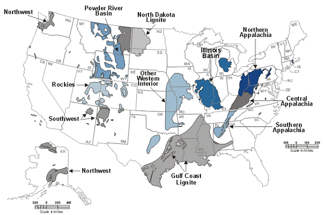
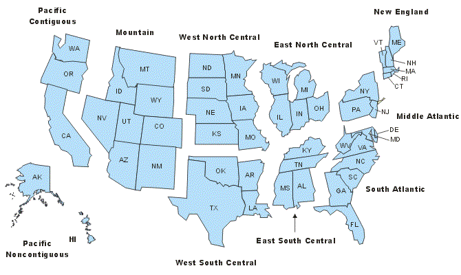
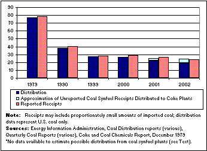
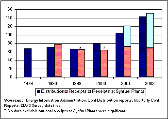

|
Data for: 1979-2001 (partial 2002)
Release Date: September 17, 2004
Next Update: As new data become available
Coal
Transportation: Rates and Trends in the United States, 1979-2001
(with Supplementary Data to 2002)
Introduction
In this report, the Energy Information Administration (EIA) is offering Excel spreadsheet files and data graphs that can be used to address some of the questions often asked about transporting coal. We prepared these data files because much underlying data on coal transportation rates and costs of coal at mines must be withheld from our public Coal Transportation Rate Database (CTRDB). Following the Federal Energy Regulatory Commission (FERC) issuance in 1996 of Orders 888 and 889, establishing principles of open access and information sharing for electric transmission capacity, interest grew in electricity deregulation and private ownership of utilities' integrated assets. In that climate, many utilities that had previously disclosed transportation rates and mine prices changed policy. Those data were declared confidential and, by law, cannot be disclosed at individual company levels or in limited aggregations that analysts or competitors could use to impute the confidential data.
The Excel spreadsheets, labeled and formatted as printable tables
in this report, are presented at levels of aggregation that for the
most part can be released (individual cells must be withheld in
some cases). They furnish average coal transportation rate statistics,
corresponding delivered prices, shipping distances, transportation
modes, origins and destinations, and general contract terms. These
statistics can be used to find representative rate and cost data
and chronological trends that would be otherwise unavailable. The
spreadsheets can be downloaded and, even though some elements may
be withheld, they can be used or recompiled to examine other issues.
To that end, we have tried to keep formats and layouts of related
tables uniform.
The Excel tables and graphs are organized in seven
sections, as follows:
Section 1 - Coal Distribution and Receipts
Section
2 - General Coal Transportation Rates, Distances, and Costs
Section
3 - Coal Transportation Statistics by Demand Region
Section
4 - Coal Transportation Statistics by Supply Region
Section
5 - Trends in Coal Transportation Contracts
Section
6 - Coal Transportation Rate Database, Metrics and Limitations
Section
7 - Summary of 2001 Contract Coal Shipment Details
Sections 1 through 5 are
introduced in the following Summary and Discussion section. Sections 6 and
7 are introduced in the final two report sections, of the same names.
The tables in this report were compiled from transportation statistics
supplied periodically by the Federal Energy Regulatory Commission (FERC) and
the Department of Transportation, Surface Transportation Board. The report
presents transportation-rate data calculated between specific origins and
destinations for the most recent period, from 1999 through 2001, and for two
baseline years, 1979 and 1990. The tables in Section 1 also include data for
2002 that are available from coal distribution and coal receipts surveys conducted
by EIA, which provide some insight into coal volume and origin/destination
trends beyond 2001. Tables based on non-confidential information such as average
national-level coal transportation distances, tonnages, and transportation
rates (Section 2, Tables 2.05-2.09), contract information and statistics (Section
5, Table 5.01 and 5.02), and general database metrics and source information
(Section 6, all four tables) include data for all years between 1979 and 2001.
These tables do not include the more detailed origin/destination pair calculations.
Graphs have also been created from selected statistics that illustrate
important trends in U.S. coal transportation and distribution. In the
Summary that follows, only major trends in coal transportation are
illustrated. Click here to view
Excel tables and graphs online.* To download
the Excel files, click
here.
*When viewing online, users of non-Microsoft
browsers may need to use the index sheet to navigate the Excel tables
and graphs.
Summary and Discussion
This section describes as background some factors and general trends
relevant to coal transportation and the use of this report and its
spreadsheets. The ideal starting point for recent coal transportation
rate statistics is 1979 - the last full year before the passage of
the 1980 Staggers Rail Act, which largely deregulated the U.S. rail
industry. Prior to 1980, rail rates conformed to published tariffs
regulated by the Interstate Commerce Commission; starting in 1980,
common carrier railroads were encouraged to compete for business
and allowed to set their own freight rates, with much lessened oversight.
The earliest data in the CTRDB, EIA's coal transportation rate database,
are for 1979. Other EIA data, for coal distribution and coal receipts,
started much earlier. Because EIA was created in late 1977 and because
of transitions in and redefinitions of energy data mandates, however,
some 1979 statistics are not available. On the other hand, EIA coal
distribution and coal receipts data are available more promptly than
the coal transportation rate and associated data from the FERC biennial
survey, Form 580. Accordingly, coal distribution and receipts data
are presented through 2002 whereas FERC Form 580 transportation rate
data are available only through 2001.
Since deregulation, average rates for coal transportation contracts
have declined steadily when measured in inflation-adjusted dollars,
and in some cases even in nominal dollars. The average coal transportation
rates per ton, and per ton-mile, are shown below in constant, year
2000 dollars.
Average contract coal transportation rates began to decline about
two to five years after implementation of the Staggers Act. The rates
and related data in the CTRDB and in this report are for coal delivered
under contract and exclude spot coal purchases, defined as coal deliveries
scheduled for 12 or fewer months. Starting in 1981, constant-dollar
rates per ton began to decline but rates per ton-mile increased through
1984. Interestingly, this shows that rates per ton (that is "flat
rates") during that period were not yet declining. The rate per ton-mile
was still increasing, but the statistics show that on average shippers
were simply purchasing coal less distant from their facilities and
holding down rates per ton by holding down mileage. This option would
not have been universally feasible, however, to all shippers depending
on the terms defined in existing supply contracts. It can be assumed
that during this period many existing contract rates were renegotiated
and that it took some years before the changes made much difference.
Users should take into account that the weighted average data in this report are indeed averages, and that individual rates and mine price outliers are not depicted. In some cases, they can be found in the CTRDB itself, especially prior to 1996. The rates shown are collected primarily from coal burning utilities and are not necessarily the rates available to industrial customers, almost all of whom tend to buy coal under smaller supply contracts.
The data show that customers have experienced a range of differences in coal transportation options during the 1979-2001 period. Facilities served by rail can negotiate better rates if there is a competing railroad they can use, or a feasible competing transportation mode. "Captive" mines and coal consumers - those located where a single carrier or mode is their only practical transportation option - have long claimed that they were offered only higher, take-it-or-leave-it rates. Barges generally offer the least expensive transportation rates, and facilities that can take advantage of barge shipment for all or even a significant part of the shipping distance can usually temper transportation costs. Different railroads use different rate structures and have in recent years implemented new requirements, such as automated loading and unloading equipment or 7-day-per-week loading and unloading, that affect supplier and customer overhead costs but are not reflected in rates. Rates charged may be lower for customers that lease or own their own fleet of coal cars.
Rates vary from one region to another, partly because there are different carriers involved, but also because some regions are well set up for coal transportation and others are not. Coal regions and coal fields and Census Regions and Census Divisions are defined in Figures S2 and S3.
| Figure S2. Coal Regions and Coal Fields |
|  |
| Coal Regions |
Coal Fields |
States |
| Appalachia |
Northern Appalachia |
MD, OH, PA, Northern WV |
| Central Appalachia |
Eastern KY, VA, Southern WV |
| Southern Appalachia |
AL, TN1 |
| Interior |
Illinois Basin |
Western KY, IL, IN |
| Gulf Coast Lignite |
TX, LA, MS |
| Other Western Interior |
AR, IA, KS, MO, OK |
| West |
Powder River Basin |
WY, MT |
| North Dakota Lignite |
ND |
| Southwest |
AZ, NM |
| Rockies |
CO, UT |
| Northwest |
AK, WA |
| Figure S3. Census Regions and Divisions |
|  |
| Census Regions |
Census Divisions |
| Northeast |
New England + Middle Atlantic |
| South |
South Atlantic + East South Central + West South Central |
| Midwest |
East North Central + West North Central |
| West |
Mountain + Pacific (Contiguous and Noncontiguous) |
Infrastructure, trackage, switching facilities, loading equipment,
and trained crews are more available in some geographic regions,
and this certainly can affect rates. Table S1 illustrates changes
in the quantities of coal used in Census Divisions between 1979 and
2002.
Table
S1. Domestic Coal Distribution to Census Divisions,
by Percentage of Total Coal Shipped,
1979, 1990, 1999, 2000, 2001, 2002 |
| Census
Division and
Year |
1979 a |
1990 |
1999 |
2000 |
2001 |
2002 |
| New England |
0.2%
|
0.6%
|
0.3%
|
0.3%
|
0.3%
|
0.2%
|
| Middle Atlantic |
11.5%
|
8.4% |
6.4% |
7.0% |
7.2% |
6.7% |
| East North Central |
30.9% |
23.3%
|
23.5%
|
22.6%
|
22.7% |
23.4% |
| West North Central |
11.6% |
12.8% |
14.7% |
13.7% |
13.7% |
14.9% |
| South Atlantic |
15.6% |
17.1% |
16.0% |
17.4% |
17.3% |
16.7% |
| East South Central |
12.4% |
10.2% |
10.7% |
10.5% |
10.6% |
10.4% |
| West South Central |
7.0% |
14.2% |
15.1% |
14.8% |
14.5% |
14.6% |
| Mountain |
9.5% |
11.7% |
11.8% |
11.4% |
11.5% |
11.3% |
| Pacific |
1.2% |
1.1% |
1.4% |
1.4% |
1.6% |
1.6% |
| Unknown Destination |
0.1% |
0.6% |
0.2% |
0.7% |
0.6% |
0.1% |
Coal Distribution and Receipts (Full
spreadsheets at Tables 1.01 - 1.03)
EIA's coal distribution data are collected from coal producing and
coal sales companies. Responding companies identify all coal shipped
by State of origin, by destination States, and by the consuming sectors
to which the coal was sent. Coal distribution statistics span 1979
through 2002 and cover all but the smallest coal producers. Although
producers and distributors may not be aware of occasional secondary
transfers, their destination and consuming sector data traditionally
represent a credible upper boundary for coal quantities supplied
to domestic consumers and to exports. Domestic coal distribution
increased from 697 million short tons (mmst) in 1979 to 1,071 mmst
in 2001, declining to 1,051 mmst in 2002 (Table
1.01).
At the other end of the supply chain, EIA collects coal receipts
data from electricity generators, metallurgical coke plants,
and other industrial consumers. Overall agreement among these
data, and with related distribution data, is good. Over time,
collection of receipts data for minor and declining coal consuming
sectors, such as agriculture, mining, and transportation, became
impractical. For that reason, there is no grand total representing
all U.S. coal receipts. Figure S4 illustrates the historical
relationship between EIA coal distribution and coal receipts
data at electricity generators. Because electric generation constitutes
about 90 percent of U.S. coal consumption, Figure S4 closely
parallels total domestic coal disposition.
Coal distribution and receipts data correlated closely during
the past three decades, as shown, for example, in 1979 and 1990.
In 1999 through 2002, reported coal receipts declined atypically
in the electricity sector, relative to reported distribution.
The discrepancies were caused by the sale during those years
of former utility-owned generating units to independent, deregulated
companies that were not required to report fuel receipts to the
Federal Energy Regulatory Commission on the FERC Form 423 survey.
Coal receipts by the electricity sector include coal delivered
to “NAICS-22” power plants, that is, to establishments
engaged principally in the provision of electric power, and exclude
coal delivered to industrial and commercial facilities that may
generate electricity as an adjunct to their primary business.
Starting in 2002, EIA initiated a new data collection survey,
the Form EIA-423, to collect fuel receipts data from both electricity
sector and industrial or commercial generators with a capacity
of 50 megawatts or greater.
The data collected on the new EIA-423 survey substantially reduced
the discrepancy in receipts compared to distribution. The persistence
of a smaller discrepancy is likely attributable to lags between
the time when a sold power plant stopped reporting receipts to
FERC and the time when the plant was picked up on the EIA-423
survey, and by difficulties defining all qualifying survey respondents.
Adding to the discrepancy was a lapse in statutory authority
for FERC’s Form 423 survey in 2001.
The dark blue bars in Figure S4 show reported coal distribution
and illustrate the gap between distribution and reported coal
receipts from 1999 through 2001. The receipts data are rounded
out more fully by adding EIA’s
estimates (2000 and 2001) and the author’s
estimate (1999) of coal receipts at nonutilities and nonresponsive
FERC-423 utilities (gray hachure-patterned bars). The yellow
hachure-patterned bar segment represents residual non-reporting
by utilities and nonutilities even after EIA and FERC-423 surveys
were resestablished. Since reported coal consumption data were
relatively fully reported, non-reporting of coal receipts could
be approximated by using the electricity sector coal consumption
for 1998 through 2002, minus reported coal receipts, adjusted
for year-to-year electricity sector stock changes. These differences
were added to the 1999 through 2002 coal receipts in Figure S4.
Discrepancies between coal distribution and receipts data also
expanded, beginning in 1999, because increasing tonnages of coal
were processed at coal synfuel plants. Most of the synfuel produced
is believed to have been received
and consumed, ultimately, at electric power plants, with lesser
amounts at metallurgical coke plants and other industrial plants
(light blue bars, figures S4 to S6). In order to preclude double
counting of coal and coal synfuel consumption, EIA treats coal
transferred to synfuel plants as distributed to the Other Industrial
sector, where it is transformed (not consumed) into a manufactured
fuel product. It is possible that coal producers or distributors
reported minor amounts of the coal processed at co-located or
nearby synfuel plants (many of which were partly owned by electric
power producers) as distributed to the electricity sector. Further,
quantities of coal receipts at coal synfuel plants were not surveyed
until the 2001 calendar year, and early response rates were incomplete
due to frequent changes in locations and ownership of the synfuel
plants.
Figure S5, showing coal distribution and receipts at metallurgical
coke plants, reflects the steel industry transition over the
past two decades to less coke-intensive ways of producing iron
and increased use of electric arc furnaces. Electric arc furnaces
use scrap iron or steel as feedstock, which is remelted, reducing
the need for highly coke-dependant blast furnace metal. Coal receipts
to produce coke for blast furnaces and smelters declined from
78 mmst in 1979 to 24 mmst in 2002. The difference between distribution
and receipts - 2 to 5 mmst between 2000 and 2002 - may indicate
misidentification of the consuming sector for some distribution
and/or the fact that some of the receipts at coke plants in that
period were classified as coal synfuel or came from imported
coal.
For 2001 and 2002, EIA has supplied approximations of synfuel coal
receipts at coke plants (Table S5). There was no source of data
on synfuel coal receipts during that period. EIA used 1998 through
2002 data on total coal delivered to synfuel plants, adjusted by
the ratio of consumption of normal coal at coke plants to consumption
of normal coal for the total U.S. The ratio was 0.061 and the assumption
was that essentially 100 percent by weight of coal received
at synfuel plants is converted to salable synfuel during each year.
Figure S6 illustrates the gap, beginning in 2000, between coal distribution and receipts
at the Other Industrial sector. In 2000, a clear shortfall in receipts data resulted in part from
the absence of data collection authority at coal synfuel plants. In 2001 and 2002, with receipts at
synfuel plants being surveyed, the impact of their operation was evident. By 2002, more than half of
all coal received in the Other Industrial sector was dedicated to synfuel operations.
There is the possibility that some of the “coal” receipts seen in
the lower, pink bars in Figure S6 included coal synfuel. The 1998 through 2002
ratio of (normal) coal consumed by other industrial plants to total coal consumed
in the U.S. was small: 0.026, or 2.6 percent. It is reasonable to assume—and
there is evidence to support—that some manufacturing plants have consumed
synfuel coal. If, as with coal, those plants accounted for 2 to 3 percent of
total synfuel consumption, from 2000 through 2002 that would equate to 1 or 2
mmst of coal synfuel annual receipts at industrial plants, that may also have
been counted (i.e., double-counted) as receipts at the synfuel plants, both within
the Other Industrial sector.
| Figure
S5. U.S. Coal Distribution vs Receipts for Metallurgical
Coke(Million Short Tons) |
|  |
|
| Figure
S6. U.S. Coal Distribution vs Receipts for the Other
Industrial Sector(Million Short Tons) |
|  |
|
General Coal Transportation Rates, Distances, and Costs
(Full
Spreadsheets at Tables
2.01 - 2.09)
Coal transportation in the United States underwent extensive changes
in the years following the Staggers Act. These three sets of tables
span the years 1979 through 2001. They show the cost-related changes
between coal supply and major coal demand regions ( Tables
2.01 - 2.04) , the changes in
shipping distances for coal from the coal field supply regions (Tables
2.05a - 2.05k), and
the changes in national average rates and costs of transporting contract
coal to coal-fired utilities (Tables
2.06 - 2.09). Based on those data, the average cost
per ton to transport coal in United States (by all modes) peaked
in 1981 at $15.60 per short ton and by 2001 (preliminary data) had
declined to $9.01 per short ton, expressed in constant, year 2000
dollars (Table 2.06). That
represents a 42 percent decline in the average contract rate per
ton to transport coal to consumers. Table 2.06 shows that contract
rail rates did not peak until 1984, at $17.52 per short ton, and
had also declined by nearly 42 percent, to $10.19 per short ton by
2001 (in constant, year 2000 dollars, preliminary data).
Coal
Transportation Statistics by Demand Region (Full
spreadsheets at Tables
3.01 - 3.14)
This group of tables includes "snapshots" that gather coal transportation statistics by demand region (Census Division) in 1979, 1990, 1999, 2000, and 2001, by mode of transport. The tables also show coal tonnages shipped to each demand region in each indexed year, in total, by mode of transport, and by coal sulfur content ranges. The last five tables, 3.10 through 3.14, present statistics on coal transport costs for the same years but broken out by three ranges in contract size (based on actual tonnage shipped). The data in these tables are useful for comparing coal delivery cost differences among regions, over time, and based on size of contract.
Coal
Transportation Statistics by Supply Region (Full
spreadsheets at Tables
4.01 - 4.11)
In this grouping the tables include "snapshots" of coal transportation statistics assembled by supply region (coal field), for the years 1979, 1990, 1999, 2000, and 2001. For the five major producing coal fields (Central and Northern Appalachia, the Illinois and Powder River Basins, and the Rockies) non-withheld data are sufficient to show trends in transportation rates, which are shown in five sets of graphs. The data in the tables are useful for comparing coal delivery cost differences typical of the coal field supply regions, with changes over time. The tables show contract coal tonnages shipped from each coal field in each indexed year, in total, by mode of transport, and by coal sulfur content ranges. Where available, data for rail data have been added showing the rates and costs, and tonnages covered, for contract coal delivered in shipper-owned cars. Over the years, many utilities leased or purchased their own fleets of coal cars - usually of higher than average capacity - with the understanding that such shippers would be eligible for lower rail rates from the carriers.
Trends
in Coal Transportation Contracts (Full
spreadsheets at Tables
5.01 - 5.08)
As recently as 1998, the majority of active coal contracts covered
in the CTRDB were, when first signed, written for periods of 11
years or longer, including 23.1 percent of existing contracts
in the CTRDB that had originally been written for 31 years or longer (Table 5.02).
Contracts written for 35 years were not uncommon in the mid-1970s, and some
of those may still be in effect.
In view of continuously declining coal prices during the 1980s and 1990s, coal
customers grew disaffected with new long-term contracts. With excess
capacity in the coal industry, customers were able to set shorter
terms for new contracts or renegotiate old contracts. It seemed
more practical to coal buyers to limit contracts to 5 to 10 years
and be well positioned to lock in later to (presumably) still lower
prices. Another trend that developed was including"reopeners" in new contracts - options that would permit customers to renegotiate prices at set times or per specific financial indices.
According to EIA statistics, average mine prices for coal (comprising both contract and spot sales) declined steadily throughout the 1990s. The decline started to reverse in 2000, continued upward during 2001 and 2002, and is expected to have increased again in 2003. Based on CTRDB data, nearly 97 percent of all new coal contracts written from 1999 through 2001 run for 5 years or less (Table 5.07). Anecdotal information indicates that neither coal suppliers nor coal customers wanted longer contracts during those years-suppliers because prices in play were too low to sustain economic mining and customers because many electricity producers were in financial straits, had sufficient coal to postpone major purchases, and were convinced or hopeful that coal prices would eventually turn down again.
This section summarizes the Coal Transportation Rate Data Base (CTRDB), including its content and data sources, data reliability, data quality, data availability, and relationship to other data systems and coverage levels. The database can be downloaded at: ctrdb/database.html.
History and Database Description
The CTRDB is a comprehensive database that contains electric utility coal supply contract data and transportation-related data. The data for this system are part of the detailed "Interrogatory on Fuel and Energy Purchase Practices " collected by the Federal Energy Regulatory Commission (FERC) on Form 580. The survey is conducted every 2 years. It requires responses from all jurisdictional utilities that either operate or have ownership interest in at least one steam-electric generating station with a capacity of 50 megawatts or greater. Jurisdictional utilities, as defined under the Public Utility Regulatory Policies Act of 1978, are facilities involved in the transmission of electric energy in interstate commerce and the sale of electric power at wholesale in interstate commerce. Jurisdictional utilities must file only if they use the Act’s Fuel Adjustment Clause to set electricity rates.
Because of its specified authority, FERC collects no information
on Form 580 for a significant portion (52 percent in 2001)
of the contract coal consumed at and transported to U.S. electric
utilities. In order to improve the coverage of the CTRDB and
to provide a more comprehensive view of transportation rates,
supplementary data are obtained from FERC Form 423, "Monthly
Report of Cost and Quality of Fuels for Electric Plants, " and
from the Surface Transportation Board (STB), annual "Carload
Waybill Sample. " The
FERC 423 data are used to estimate missing transportation rate
data using its delivered prices and Form 580 mine prices. For
utilities not covered by Form 580 at all, the CTRDB has been
augmented with confidential transportation rates and shipping
distances computed from STB waybill samples.
Starting with the 1998/1999 FERC Form 580 update, EIA opted to include in the CTRDB certain coal transportation rate and distance data from the STB Waybill Sample that meet EIA's quality assurance criteria but do not match deliveries of record to electric utilities. Such deliveries are believed to go to nearby industrial consumers. No actual coal supply contract information is associated with STB waybill data prepared for EIA and actual consumers are not identified. EIA uses STB extracts of waybill data by counties of origin and destination for coal delivered to counties where Form 580 nonreporting utilities are located, and matches waybill delivery data with mine of origin counties and tonnages from FERC Form 423. The conclusion that certain waybill data represent coal deliveries to major industrial coal consumers is based on the coal sources and quantities and on the existence of industrial development in the destination counties. EIA identifies the "Utility " for those data as "Industrial Coal," and assigns dummy contract codes numbered between 5900 and 5999.
The FERC Form 580 records contained within the CTRDB are contract- and route-oriented. For each utility plant receiving coal under a specific contract, the CTRDB provides an origin-to-destination record for every route over which that plant's coal flows. A contract record within the CTRDB can be broken down into four subsets of data fields: contract accounting and specification information, plant information, route information, and transportation mode information. A utility company within the database can have several coal supply contracts; one coal supply contract can serve several plants; an individual plant can receive coal from one supplier but sourced at several mines on the same contract; and an individual plant can be covered by several different contracts. Contract accounting, coal specifications, transportation and cost factors, and other details are described in the CTRDB file layout and Users Manual found in READMEpublic.doc supplied with CTRDB file downloads: http://www.eia.gov/coal/transportationrates/archive/2002/ctrdb/database.html.
Relationship to Other Data Systems and Coverage
Since the CTRDB is drawn primarily from the FERC Form 580 survey, its data consistency and coverage can be described in the context of Form 580 and its relationship to other data systems. The Form 580 survey population is a subpopulation within FERC’s survey population for Form 423, "Monthly Report of Cost and Quality of Fuels for Electric Utilities." Form 580 covers jurisdictional public utilities while Form 423 covers all public utilities, i.e., investor-owned utilities, federally owned utilities, municipalities, and cooperatives. The Form 580 survey is conducted every 2 years, while the Form 423 survey is conducted monthly.
As of 1993, FERC Form 423 covered approximately 235 utilities
and 700 fossil-fueled power plants (coal, oil, and natural gas).
Of those utilities, 173 utilities received coal at 412 power plants.
FERC Form 580 in 1993 covered 117 utilities and 292
fossil-fueled plants. As of 2001, the Form 423 coverage
was down to 198 utilities and 605 fossil-fueled plants, of which
149 utilities and 343 plants had coal receipts. The Form 580 coverage
for utilities with coal-fired plants was down to 83 utilities at
218 plants. (Coal-fired power plants are generally larger than
oil- or natural gas-fired plants, so their net generation is relatively
larger than the plant counts may imply.) Form 580 collects data
for utility contract purchases only, however, whereas Form 423
collects data for both contract purchases and spot purchases. Spot
purchases are purchase orders to obtain coal for a period of less
than 1 year. Table
6.01 shows
the breakout of Form 423 tonnage into contract and spot totals,
CTRDB coal tonnages from Form 580 only and augmented with data
from other sources (see below), and the augmented tonnage as a
percentage of both the FERC 423 total tonnage and the FERC 423
contract tonnage.
Although both surveys collect data on utility contract purchases
of coal, most utilities must report contract purchases on Form
423 but many are exempted from Form 580 reporting requirements.
Thus, the Form 423 coverage and the contract tonnage reported is
higher than for Form 580. Contract tonnage is the most useful variable
to measure consistency of reporting for the two systems. In order
to obtain a more comprehensive record of contract tonnage, the
Form 580 contract tonnage was augmented with data derived from
the Surface Transportation Board (STB) Carload Waybill Sample.
The resulting contract tonnage in the CTRDB is the combination
of Form 580 contract tonnage and STB Carload Waybill Sample derived
contract tonnage. The total contract coal received at U.S. utilities
in 2001 was 607.8 mmst according to Form 423. The 289.0 mmst of
contract tonnage recorded by the CTRDB from Form 580 constitutes
47.6 percent of the Form 423 contract coal receipts. The CTRDB
augmented tonnage totaled 486.7 mmst in 2001, which would account
for 80.1 percent of the Form 423 contract tonnage total. It can
be assumed that the augmented total includes both contract and
spot tonnage because the STB survey does not collect contract information;
however, the STB data are incorporated into the CTRDB only if they
reflect compatible values with the analogous contract data from
Form 580.
Survey differences contribute to four sources of variations between
FERC Form 580 and FERC Form 423 data series: (1) differences in
surveyed populations or statutory requirements, (2) different reporting
periods, (3) requirements based on electric generating station
capacity (steam-electric generating station and peaking units with
either 24 megawatts or 50 megawatts minimum nameplate
capacity could have reported on either survey, depending on the
requirements at the time), and (4) data reporting procedures, data
recording, and processing procedures for the two systems.
Data Reliability and Quality
The FERC manages all quality control issues, mandates the type of data collected, and handles nonresponses and respondent contact records for the FERC Form 580. Quality assurance measures in the extraction of data from Form 580 responses are handled by the EIA, but EIA is not authorized to contact Form 580 respondents. Efforts are made to rectify coding errors, tabulation errors, keying errors, and problems of data interpretation. Because the data are not collected primarily for input into the CTRDB, however, FERC 580 responses may contain estimates or averages of transportation rates for several shipments under one contract and estimates of volumes and distances of shipments.
An error detection and correction program is used to detect and correct errors that escape manual screening. This program consists of a set of ranges and range checks for all quantitative data fields within the database. The range values were established in coordination with FERC personnel. When the database is evaluated using this program, values that fall outside of pre-established ranges are identified for investigation. Internal inconsistencies are corrected using a program that compares values from year to year to detect outliers based on the series of values. This program also resolves problems of record redundancy. Table presentations are also examined for regional and national transportation data consistencies. Data record printouts are reviewed and outliers are eliminated where deemed necessary.
For a few specific demand regions, supply regions, and/or transportation modes, time series data vary considerably from one year to the next. In most cases, this appears to be due to the small number of records for which transportation rate data were available for that particular region or transportation mode. In those cases, fluctuations in tonnage or rates for one contract could have a substantial influence on the regional average. This situation occurs most frequently for shipments from the "Other Western Interior" region and for shipments by truck and "other" transportation modes (primarily conveyors).
Data Availability
The CTRDB data are based on public use data from the FERC 580 for the years 1979 through 1987 and both public use and confidential data for 1988 through 2001. For the years 1979 through 2001, data that were unavailable for public use due to confidentiality consisted of coal transportation rates and mine price. Also, some records did not have complete data. To minimize the skewing of statistical calculations, records with missing data were excluded from certain calculations. Furthermore, an effort was made to increase the availability of data through derivation in two ways: (1) when two of the three cost data elements were available, the third one was derived from the available data; i.e., if mine price and delivered price were available, the transportation rate was derived by subtracting the mine price from the delivered price; and (2) certain FERC 580 confidential data were made available for the years 1988 through 2001 under an agreement between EIA and the FERC to display the confidential data only in an aggregated form. A similar arrangement with the STB protects confidentiality of waybill data extracts by displaying results only in aggregated forms.
The availability of data on coal transportation rate per ton, distance, and tonnage is important because these variables are used in the calculation of the average distance shipped, average transportation rate per ton, and average transportation rate per ton-mile. Tables 6.02, 6.03, and 6.04 show the number of records and tonnage contained in the CTRDB, the number of records and tonnage obtained from Form 580, the number of supplementary records and tonnage in addition to Form 580, and the number of records and tonnage with incomplete data. The data for Tables 6.02, 6.03, and 6.04 include all transportation modes.
The incomplete data in Table 6.02 represent records that do not contain data for the distance shipped. The tonnages for these records are not included in the calculation for average distance. In 2001 there were only 29 records out of 727 that did not contain data for distance, as a result 39.6 mmst of coal were disqualified from the average distance shipped calculation.
Similarly, the incomplete data for Table
6.03 represent records that do not contain data for the transportation
rate per ton. In 2001 there are currently 342 records that do
not contain transportation rate data and 125.5 mmst are disqualified
from the calculation of average transportation rate per ton mile.
Note, however, that additional data from eleven utilities with
incomplete rate data in 2000 and 2001 are being sought by FERC
and are expected soon.
Table 6.04 shows the data available for the calculation of the average transportation rate per ton-mile. The incomplete data for Table 6.04 takes into account records that are missing both distance data and transportation rate data. Since this is a summation of data from Tables 6.02 and 6.03 there are more incomplete records (371) and tonnage (165.1 mmst) disqualified for the calculation of the average transportation rate per ton-mile. Again, the additional data from eleven utilities is expected soon and will help correct the thinness of 2000 and 2001 rate data.
Summary of Validated Utility Coal Contracts in 2001
(Table 7.01)
Table 7.01 summarizes the coal supply contracts reported via the Federal Energy Regulatory Commission (FERC) Form 580. The contract information in Table 7.01 covers the 2001 reporting year, organized by electric utility company, power plant, and contract expiration date.
Coal supply contracts usually last for 1 year or longer and are binding agreements between coal consumers and coal producers or brokers. Provisions of coal supply contracts typically include:
- Term, or length, of contract, possibly with extension provisions
- Minimum quantity to be purchased
- Sources of the coal and its quality characteristics
- Base transportation rate, in dollars per ton, as of the contract effective date
- Rate adjustment provisions, used to adjust transportation rates for inflation or deflation.
Other items covered by a contract agreement may include coal price, coal quality incentives or penalties, supplier identification, coal production location, contract sign and expiration dates, and renewal and renegotiation options.
|